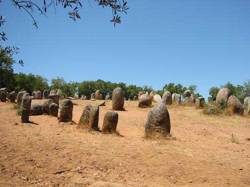
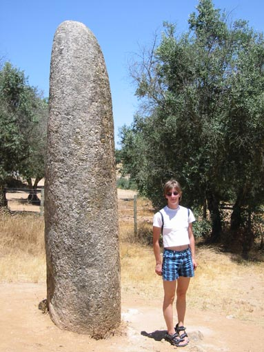

Cromlech de Almendres
Backtracking to Valverde, a scant four miles will bring the traveler to another outstanding megalith, the Cromlech dos Almendres. (Not to worry, once the traveler is on this route, signs toward "Cromeleque e menir dos Almendres " will assist the Portuguese-less explorer in visiting the monument.) Here no fewer than 95 monoliths have been erected in an oval area some 200 by 100 feet! Look carefully: the discerning observer will notice engravings on the surfaces of some of them in either a geometric or stellar pattern. The purpose remains enigmatic, both for the engravings and the entire monument. Your Humble (and perhaps too bold) Travel Physician would suggest an astronomical purpose connected with the agricultural cycle, although others divine a magical or religious purpose for this outstanding megalithic monument.
